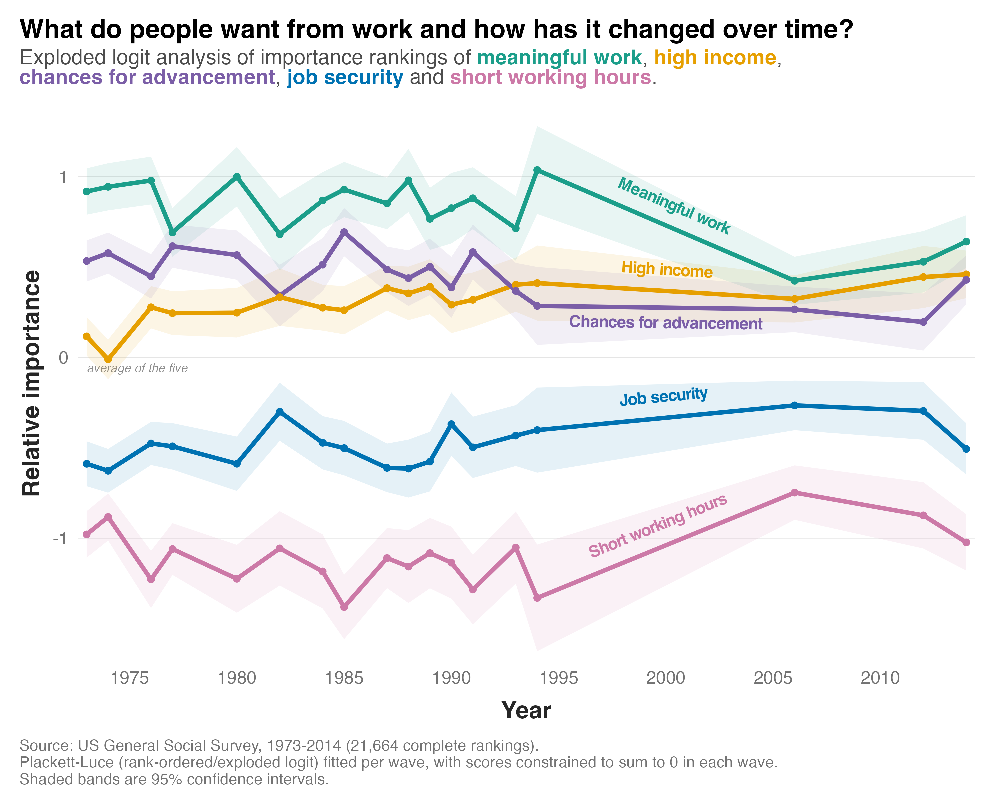

The US General Social Survey is a nationally representative survey of American adults that's been running since 1972. Many of its items have changed since it began, with new ones added and others dropped. But a handful have been asked again and again.
One of them gives people a card listing five things they might want from a job, and asks them to rank all five from most to least preferred: high income, job security, short working hours, chances for advancement, and work that is meaningful.
Ranking data can be tricky to analyse. It's easy enough to just examine which item people rank highest, but doing that throws away most of what people told you. It can also be tempting to treat the rankings as if they were separate Likert ratings, but this violates a number of statistical assumptions, because the ranking of one option depends on the ranking of the others.
So here I use the awesomely-named exploded logit model. It estimates the probability of a given option being ranked first, then the conditional probability of each remaining option being ranked second, and so on down the list. It uses all of the data, and it respects the ranking process that generated it.
The analysis produces estimates of "utilities", which reflect the relative importance of each attribute. Their absolute value isn't important. What matters is how they compare to each other.
The results are shown in the figure below. Here's what I found:

1) The ordering has been remarkably stable. Meaningful work sits on top in every single wave. Short working hours and job security sit at the bottom throughout, which doesn't mean people don't care about them, only that people choose other attributes when forced to decide. The one change in the order came in the early 1990s, when high income overtook chances for advancement. It hasn't given the position back since.
2) What has changed is the level of consensus. From the early 1990s to the mid 2000s the lines move in toward zero, and the gap between the most and least valued attribute narrowed. You can see the same thing in the raw first-place votes. Across the waves up to 1994, 49 per cent of respondents put meaningful work first, seven per cent job security and four per cent short working hours. Since 2006 that's 42, 10 and six per cent. People are spread more evenly across the options than they used to be, though the lines do fan out again a little by 2014.
3) The exception to that is high income. It started in the middle of the pack in the 1970s and has climbed ever since. In 1973, 18 per cent of people ranked a high income first and 42 per cent put it in their top two. By 2014 that was 28 per cent and 55 per cent. It is now a close second to meaningful work, and the two are nearly tied.